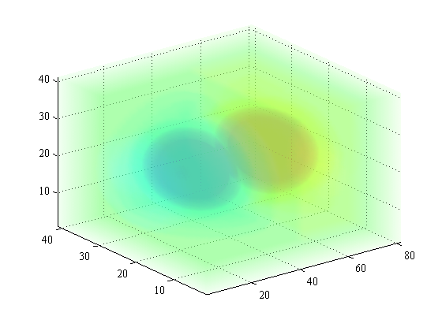

pcolor3 documentation
This function plots a 3D data volume as color-scaled semitransparent surface planes in each dimension.
Contents
Syntax
pcolor3(V) pcolor3(X,Y,Z,V) pcolor3(...,'alpha',AlphaValue) pcolor3(...,'edgealpha',EdgeAlphaValue) pcolor3(...,'alphalim',AlphaLimits) pcolor3(...,InterpolationMethod) pcolor3(...,'N',NumberOfSlices) pcolor3(...,'Nx',NumberOfXSlices) pcolor3(...,'Ny',NumberOfYSlices) pcolor3(...,'Nz',NumberOfZSlices) h = pcolor3(...)
Description
pcolor3(V) plots a field of 3D volume V.
pcolor3(X,Y,Z,V) plots 3D volume V at locations given by X,Y,Z. X, Y, and Z can be 3D matrices matching the dimensions of V, or 1D arrays.
pcolor3(...,'alpha',AlphaValue) specifies a volume transparency value between 0 (completely transparent) and 1 (completely opaque). Default AlphaValue is 0.01. This value may seem surprisingly low, but remember that you'll be looking through 100 slices--they add up.
pcolor3(...,'edgealpha',EdgeAlphaValue) specifies transparency of sides of the volume faces of the volume. An EdgeAlphaValue greater than the volume AlphaValue helps define corners and edges, especially in the presence of lighting objects. Default EdgeAlphaValue is 0.05.
pcolor3(...,'alphalim',AlphaLimits) scales transparency values with values of V. This can help highlight a variable of interest by making low V values invisible. AlphaLimits is a two-element array corresponding of values in V. If AlphaLimits is 'auto', AlphaLimits is taken as [min(V(:)) max(V(:))].
Tip: If interesting values diverge about an uninteresting mean (e.g., temperature of 25 is not interesting whereas T = 10 is interesting and T = 40 is also interesting), use 'alphalim',[25 40] and select a colormap that diverges from 25. Although T = 10 is well below the minimum AlphaLimits, 10 and 40 are equidistant from 25 and are therefore given equal opacity.
pcolor3(...,InterpolationMethod) specifies an interpolation method as:
- 'linear' trilinear slice interpolation (default),
- 'cubic' tricubic slice interpolation,
- 'nearest' nearest-neighbor slice interpolation, or
- 'direct' plots data directly instead of interpolated slices (fastest?).
pcolor3(...,'N',NumberOfSlices) specifies a number of slices in each direction. Default value is 100. Increasing number of slices can make a smoother, higher quality graphic, but may slow performance.
pcolor3(...,'Nx',NumberOfXSlices) specifies a number of slices in the x direction. Default value is 100.
pcolor3(...,'Ny',NumberOfYSlices) specifies a number of slices in the y direction. Default value is 100.
pcolor3(...,'Nz',NumberOfZSlices) specifies a number of slices in the z direction. Default value is 100.
h = pcolor3(...) returns a vector of handles to surface graphics objects.
Example 1: Simplest case
Using this sample data:
[x,y,z] = meshgrid(-2:.05:2,-2:.1:2,-2:.1:2); v = x.*exp(-x.^2-y.^2-z.^2) + 1;
Plot a simple 3D field:
figure
pcolor3(v)
axis tight
 Example 2: Adjusting appearance
Using data from Example 1, specify x,y,z values, make sides and top a tad more opaque, and then customize appearance. Below I'm using the rgbmap to specify a blue-white-red colormap.
figure pcolor3(x,y,z,v,'edgealpha',.1) rgbmap('blue','white','red') colorbar caxis([0.8 1.2]) camlight view(160,36)
In the figure above, values near 1 are somewhat uninteresting, but their opacity gets in the way of us seeing the much more interesting -0.8 and 1.2 values. With pcolor3, you can set transparency of each datapoint scaled to its value. For values like pollutant concentrations, enter 'alphalim','auto' will automatically scale transparency such that higher concentrations are more opaque. But for this dataset, values diverge about 1--we want to make all ones transparent, making datapoints more opaque the farther the get from one (greater than one or less than one). So for our dataset, the first value in AlphaLimits should be 1 because we want all ones to be transparent. Set the second value in AlphaLimits to some value greater than 1:
figure pcolor3(x,y,z,v,'alphalim',[1 1.2],'cubic','edgealpha',.1) rgbmap('blue','white','red') colorbar caxis([0.8 1.2]) camlight view(160,36)
Example 3: Atmosphere or ocean dataset
Suppose you have a 3D air temperature or ocean salinity dataset that looks like this:
[lon,lat,z] = meshgrid(-180:3:180,-80:2:80,0:100:2000); T = 30 - .1*abs(lat) - .01*z + sind(lon);
The T variable is 81x121x21. By default, pcolor3 interpolates T to 100x100x100, but in some cases it's faster simply to plot the whole dataset without interpolating, using the 'direct' command:
figure pcolor3(lon,lat,z,T,'direct','alphalim','auto') % format: xlabel('longitude') ylabel('latitude') zlabel('elevation (m)') axis tight set(gca,'xtick',[-180 -90 0 90 180],... 'ytick',[-45 0 45])
If you have Matlab's Mapping Toolbox,
c = load('coast.mat');
plot(c.long,c.lat)
Author Info
This function was written by Chad A. Greene of the University of Texas at Austin's Institute for Geophysics (UTIG), March 2015.